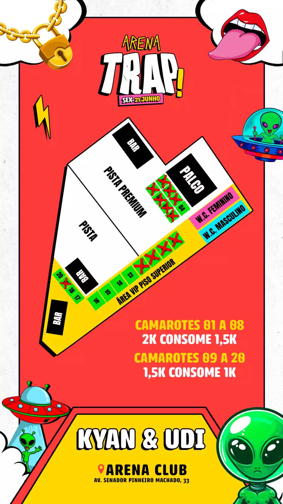

Trap agita Arena Club nesta sexta (21), em Santos
O rapper Kyan e o DJ Udi agitam o público; ingressos à venda no site Articket

A 1ª edição do Arena Trap vai invadir uma das maiores casas de show de Santos. Nesta sexta-feira (21), o rapper Kyan e o DJ Udi agitam o Arena Club, na Vila Mathias. A abertura da casa acontece às 23 horas. A abertura da casa fica por conta de DJs regionais.
Nascido e criado em Praia Grande, Kyan é a principal atração da noite e sobe ao palco com seu som que mistura rap e funk. Sucesso desde 2019, com a faixa “Mandrake”, o rapper traz um setlist variado, com hits de seu último álbum “EP UM Uma quebrada inteligente” (2023) e também do primeiro “Dias antes de mandrake” (2022).
Durante o Arena Trap, DJ Udi também anima a plateia com seus remixes de hip hop. Conhecido por sua festa ‘UDISTOCK’, DJ Udi conta com 184, 1 mil visualizações no Youtube e 259 mil plays nos remixes no Soundcloud.
O público também poderá curtir um farto open bar pista com vodka, energéticos, refrigerantes, suco e água. Além do open bar premium com vodka, gin, gummy, whisky mansão maromba, cerveja, baly saborizado, energético, refrigerantes, sucos e água.